What these signs do
Mandatory signs are blue circles. They give a positive instruction. They tell you what you must do, such as a direction you must take, a minimum speed you must hold, or a path you must use. Understanding the grammar of the round signs resolves most of these questions.
- A blue circle is an obligation. You must do this.
- A mandatory sign is addressed to every road user. Only a supplementary panel narrows it to one category, so an answer exempting a class of vehicle with no panel in the picture is false.
- A red-bordered circle is a prohibition. You must not do this. The three stop signs further down are the exception: they are round with a red border and they order a stop.
- A red triangle is a danger warning, not an instruction.
An answer claiming that a blue-circle sign forbids something, warns of danger, or assigns right of way is almost always false. A blue circle gives an order.
In the official classification these belong to the regulatory signs (segnali di prescrizione), the signs that impose a rule, alongside prohibition and right-of-way signs. So a blue arrow is correctly called both a mandatory sign and a regulatory sign: a question saying it "is a regulatory sign" is true. Keep the two class names apart: prescrizione is the regulatory family, and obbligo is the mandatory sub-family inside it.
For American drivers this family is the biggest blank spot: the US has no blue-circle signs at all. At home, orders come as black-on-white regulatory rectangles: ONE WAY, KEEP RIGHT, MINIMUM SPEED 40. Map it once: a blue circle does the job of a white US regulatory rectangle.
Watch for "now" versus "ahead." The distinction in this topic is whether a sign imposes the obligation where it stands or announces (preannuncia) an obligation at the coming junction.
Direction-obligation signs (white arrow on blue)
A white arrow in a blue circle means you must travel in the direction shown.
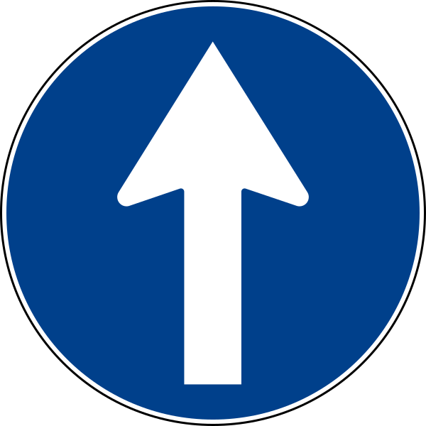
- Straight ahead only stands at the point where the obligation applies: you must continue straight, with no turn either way. It says nothing about a one-way street: it orders your direction, it does not mark the start of a one-way. It is not a lane sign either: a lane sign is a square blue panel drawn as a map of the road, with one arrow for each lane, and it tells you how each lane may be used.
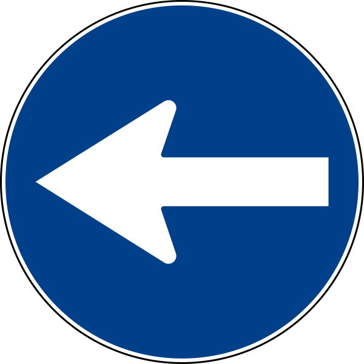
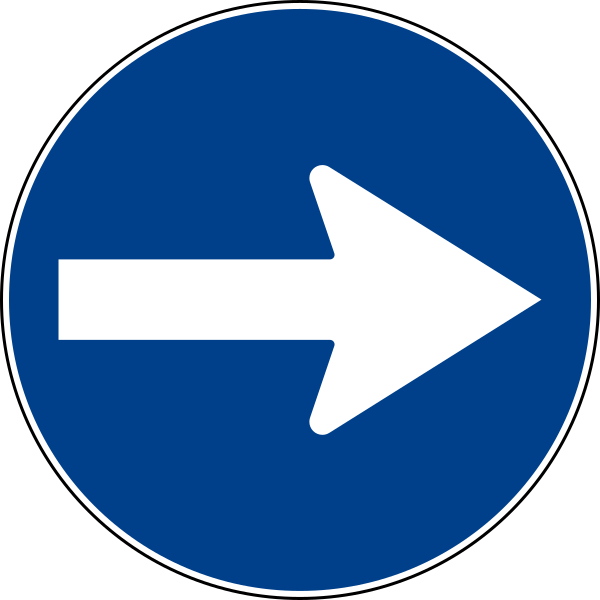
- Mandatory left turn and mandatory right turn stand at the junction where the turn is required: you may not go straight or turn the other way. Like the straight arrow in the box above, they do not mark the start of a one-way in that direction.
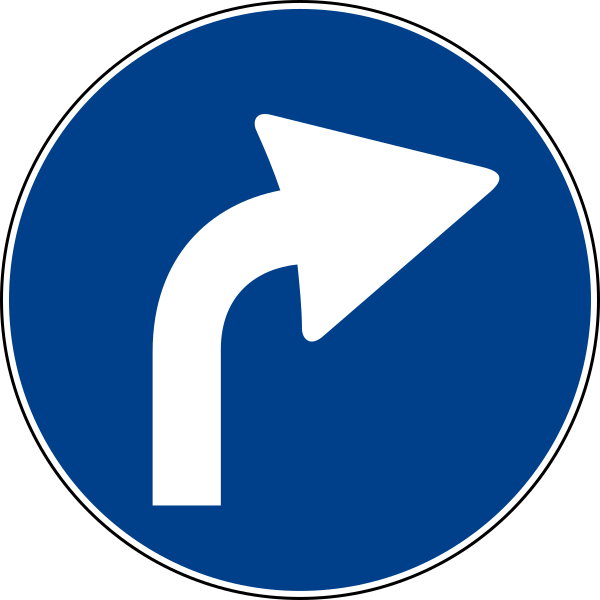
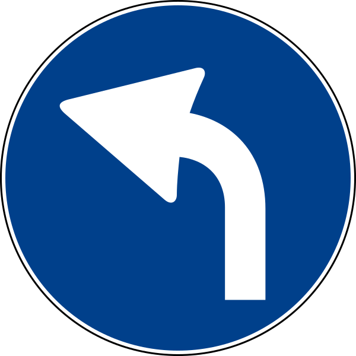
- Announced ahead. The curved-arrow versions are the advance notice (preavviso), posted before the junction: a curved right arrow precedes the DIREZIONE OBBLIGATORIA A DESTRA sign and already tells you that at the junction you will not be permitted to go straight or turn the other way. It may carry a panel with the distance to the point where the obligation applies. The curved arrows announce a turn, not a one-way in that direction.
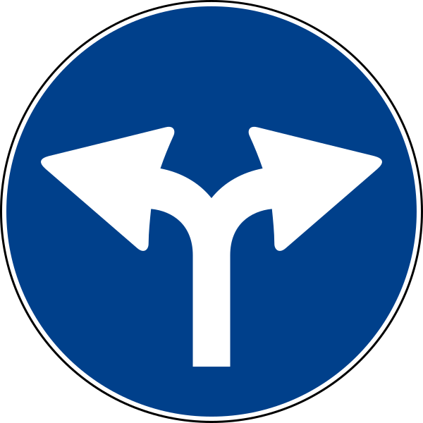
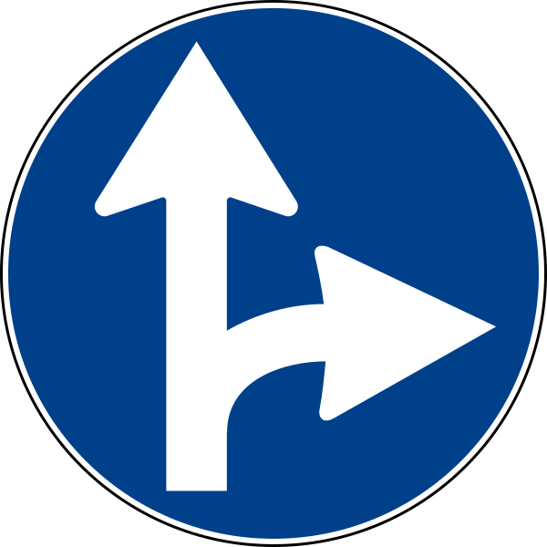
- A direzioni consentite sign uses a double arrow to show the only directions you are permitted to take. The first allows right or left, so not straight ahead; the second allows straight or right, so no left turn.
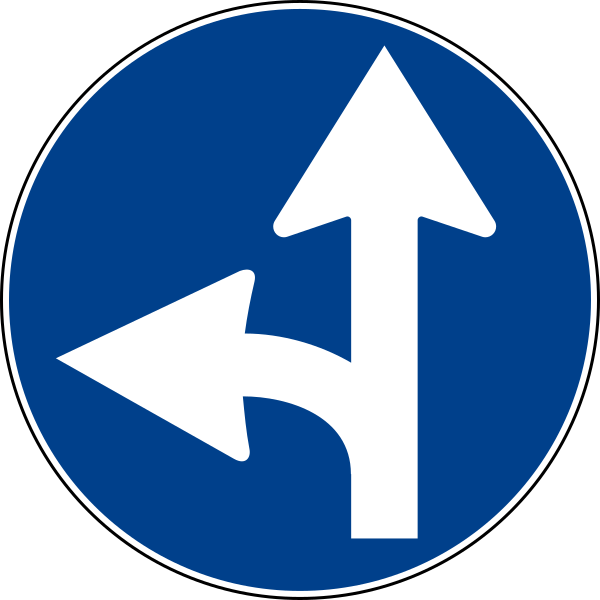
- The third member allows straight or left, so no right turn. In each case the missing direction is the forbidden one.
- A passaggio obbligatorio sign shows the side on which you must pass an obstacle, such as a traffic island, a safety island, a median, or roadwork: the arrow points to the side you must take. Passaggio means passing by the obstacle, not turning, so the road continues straight and only the side is prescribed.
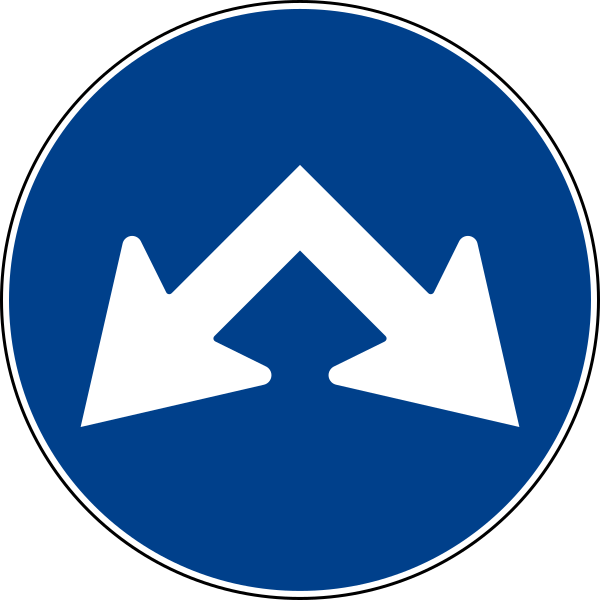
- The double version (passaggi consentiti) allows either side.
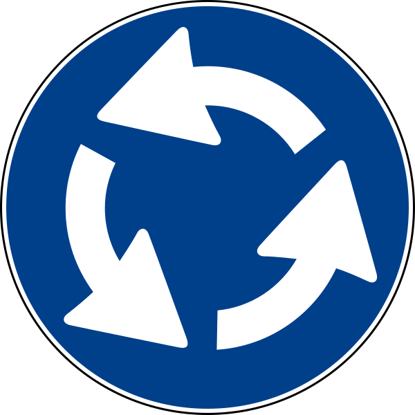
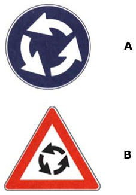
- A rotatoria sign is a blue circle with three curved arrows. It requires roundabout circulation. It does not by itself set priority. A separate yield sign does that. On extra-urban roads it is preceded by the triangular warning sign for a roundabout, which only announces; the blue sign stands before the roundabout, never on the bollard at its center.
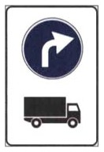
- A supplementary panel can restrict an obligation to one category. This composite announces a mandatory right turn ahead for trucks over 3.5 t. Those trucks may not go straight or left at the coming junction, while every other vehicle remains free.
Distinguish the two arrows. The round blue arrow is an order. The arrow on a rectangular indicazione sign only informs. The shape is similar, but the force is not.
Minimum versus maximum speed
This is the most frequently confused pair, and it turns on color.
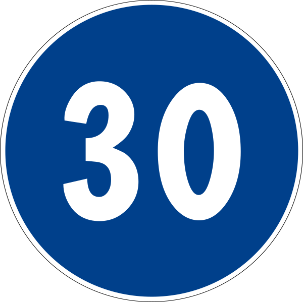
- A blue circle with a number is a minimum mandatory speed. You must travel at least that fast, and a vehicle that cannot hold that speed may not use the stretch at all.

- A red-bordered circle with a number is a maximum speed limit.
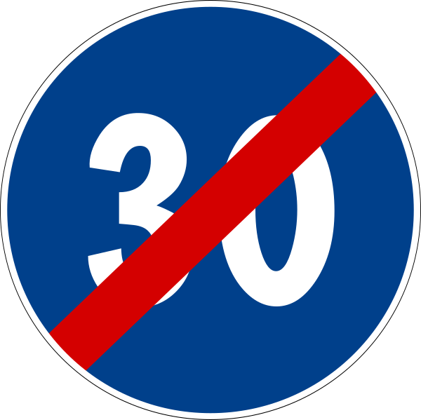
- A blue circle with the number crossed by a red diagonal bar marks the end of the minimum-speed obligation. From there on, only the road's normal maximum limits apply.
A blue "60" does not mean "maximum 60". It means at least 60. The blue circle obliges, it does not cap.
Mandatory paths (reserved and required)
A blue circle with a user symbol marks a route that is both mandatory for that user and prohibited to all others.
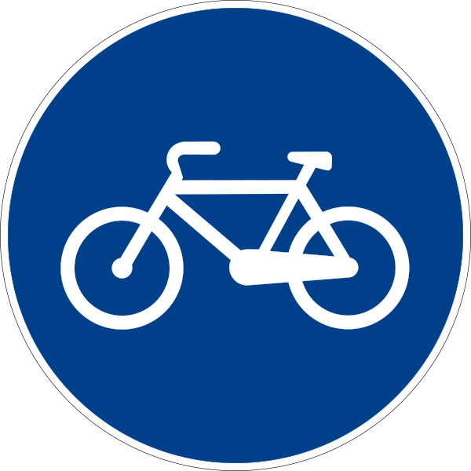
- A bicycle symbol marks a mandatory bike path (pista ciclabile). Bicycles must use it, and other vehicles may not enter. Only pedal bicycles count: a moped (ciclomotore) has a motor, is a motor vehicle in the Code, and may not use the bike path.
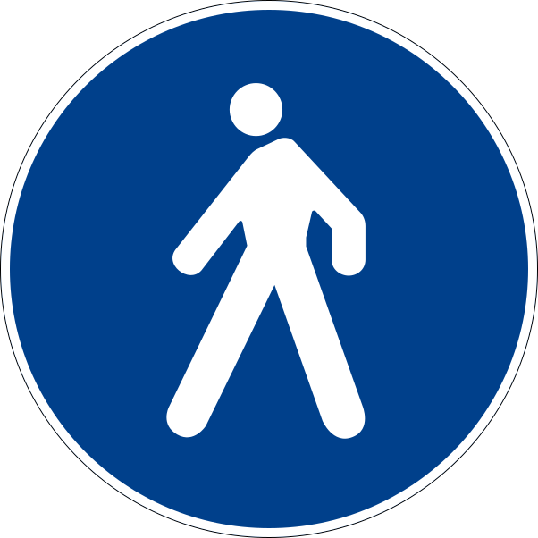
- A pedestrian symbol marks a mandatory pedestrian path (percorso pedonale). Do not confuse it with a pedestrian crossing (crosswalk): the path is a whole route reserved for walking, while the crosswalk is just the striped place where pedestrians cross the roadway, marked by its own blue square sign and zebra stripes. Bicycles are not admitted on a pedestrian path. A cyclist gets off and pushes the bicycle.
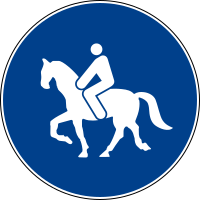
- A horse-and-rider symbol marks a bridle path (percorso riservato agli animali da soma o da sella), a path for pack and saddle animals. Like every reserved path it shuts out everyone else: no vehicles, not even electric ones, no bicycles, no animal-drawn carts.
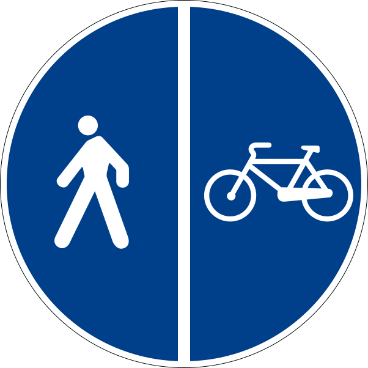
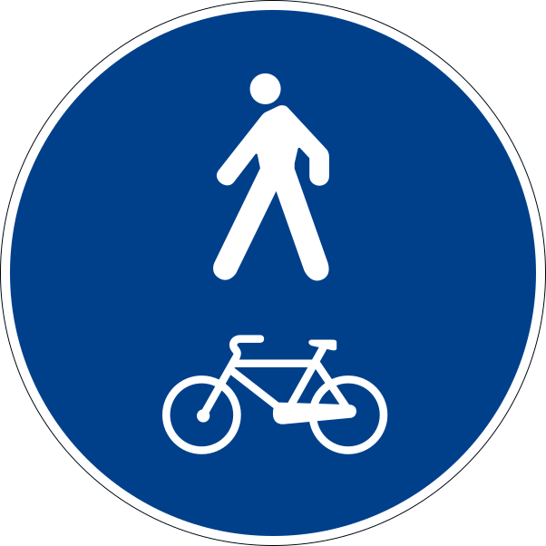
- The combined signs are a tested look-alike pair. The symbols divided by a vertical bar mark a separated path, a bike path running alongside a pedestrian path, each user keeping to their own half. The symbols stacked with no bar mark a shared path that pedestrians and cyclists use together. Neither admits motor vehicles.
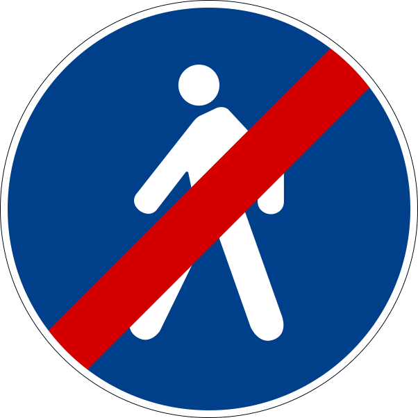
- Each path sign has a matching end sign: the same symbol crossed by a red diagonal bar. An end sign ends exactly its own path and forbids nothing to its users: the end of a pedestrian path is not the end of an area closed to pedestrians, and the end of a bike path does not ban bicycles from what follows.
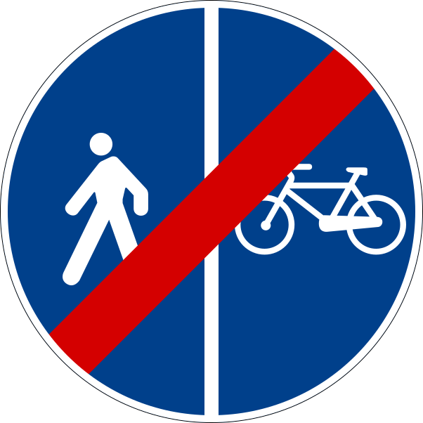
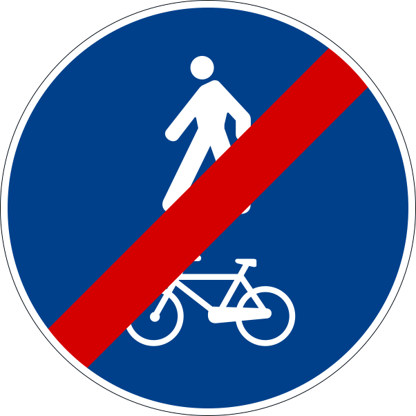
- The separated-path and shared-path end signs close those combined paths. The shared-path end sign is not the end of only the bike path or only the walkway: it ends the shared path as a whole.
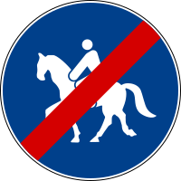
- The bridle-path end sign closes the path reserved for riders; it is not a stretch closed to horses.
Note the dual meaning, which is the point most often tested. A mandatory path is at the same time a prohibition for everyone else, even though it is a blue (obligation) sign.
Like all regulatory signs, these apply day and night. "Valid also during daylight" is true because the sign is simply always in force.
Other common obligations
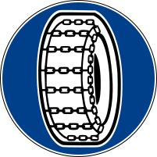
- Snow chains or winter tires. A blue circle showing a chained tire means that beyond the sign you must fit snow chains or winter tires, either one is enough. The pictured chain stands for both. Winter tires count only if they carry the M+S ("mud and snow") marking. What makes a tire "winter" is not deep tread: it is a rubber compound that stays soft in the cold (ordinary compounds harden and lose grip) and a tread cut with thousands of thin slits (sipes) whose edges bite into snow. Watch the trap: the sign says nothing about tread depth. The sign stands on roads that in some conditions are snowy or icy; it lets through only vehicles so equipped and bars the rest.
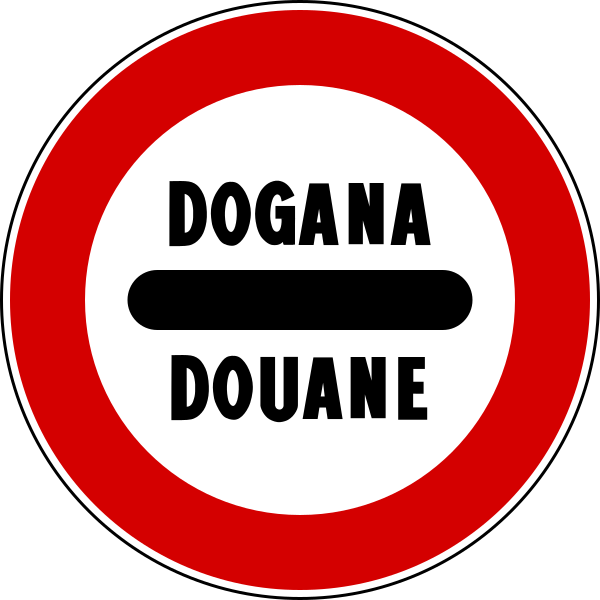
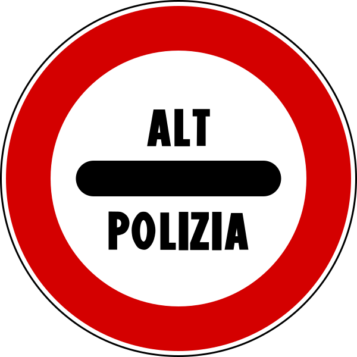
- Mandatory stop. Three related signs order you to come to a stop at a checkpoint, and despite their red border they impose an obligation, not a mere warning. DOGANA marks a customs post at a border with a country outside the European Union: you must stop even if you have nothing to declare. ALT POLIZIA marks a police roadblock: it is posted at a distance from the block and repeated at the stopping point, and it requires an actual stop, not just slowing down; it announces neither a state border nor a customs check.
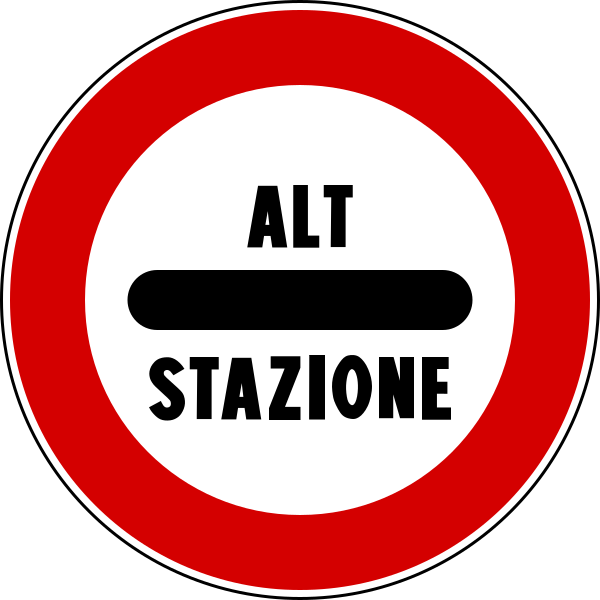
- ALT STAZIONE, the third of the family, marks a controlled access such as a toll station, where you must stop for the toll.
- End of an obligation. The matching blue sign crossed by a red diagonal bar cancels the obligation it repeats, as in the end-of-minimum-speed and end-of-path signs shown above.
How to approach a blue-circle question
- Confirm the shape and color. A blue circle means it is an order.
- Identify what the order is. It is a direction, a minimum speed, or a mandatory path.
- Check where it applies: a straight arrow orders here; a curved arrow announces the obligation at the coming junction.
- Recall the converse of a mandatory path. Others are prohibited from using it.
- Note a red diagonal bar, which marks the end of the obligation.
How the exam phrases it. An obligation forbids every alternative: the straight-ahead sign does not "permit turning", a two-arrow sign does not "permit only" one of the two, a minimum-speed sign does not "permit" a lower speed. It never suspends the general rules: above a minimum, the road's maximum still applies, so "faster than 30 without any limit" is false. And a sign that says nothing about X permits X: the end-of-minimum-speed sign "permits going faster than the number" is true, because ending a minimum forbids nothing.
Summary of key points
- A blue circle means you must. A red-bordered circle means you must not. A red triangle means danger.
- Mandatory signs are one family of regulatory signs (prescrizione), together with prohibition and right-of-way signs. "Is a regulatory sign" is true of a blue circle.
- The US has no blue circles: a blue circle does the job of a white US regulatory rectangle, and a blue number is MINIMUM SPEED, not a limit.
- A blue number is a minimum speed. A red number is a maximum speed.
- A mandatory path is at the same time prohibited to everyone else. A vertical bar in the symbol means separated halves; stacked symbols mean one shared path.
- A straight blue arrow orders here; a curved arrow announces the obligation before the junction; a rectangular arrow only informs.
- A blue sign crossed by a red diagonal bar marks the end of the obligation.